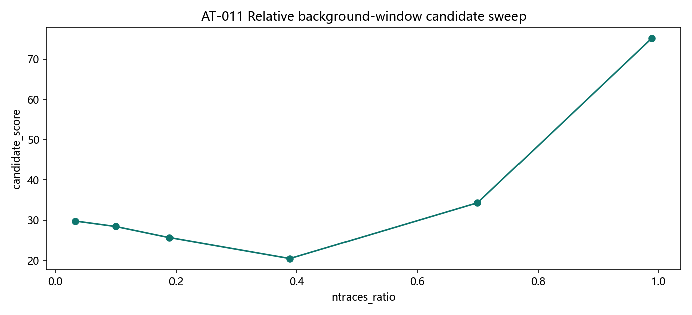
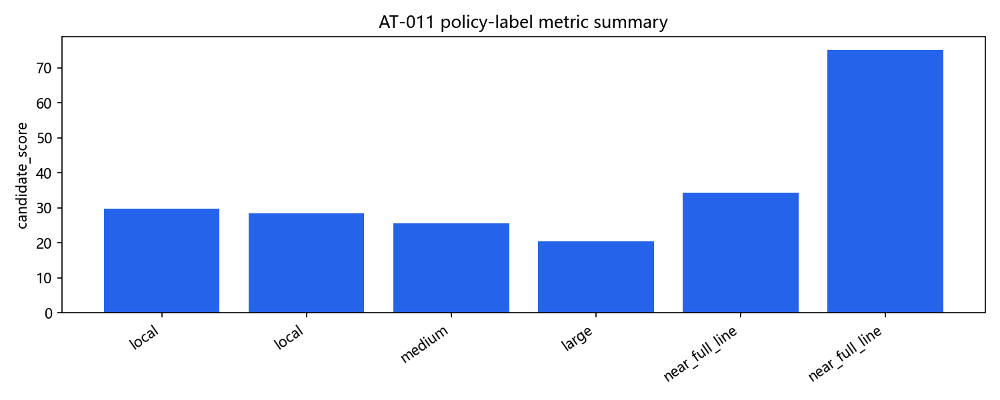
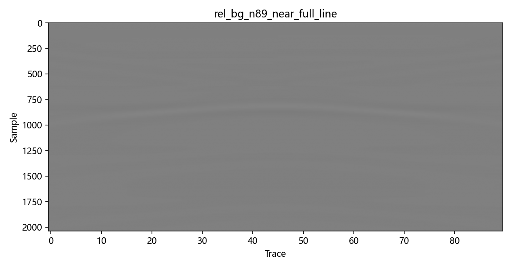
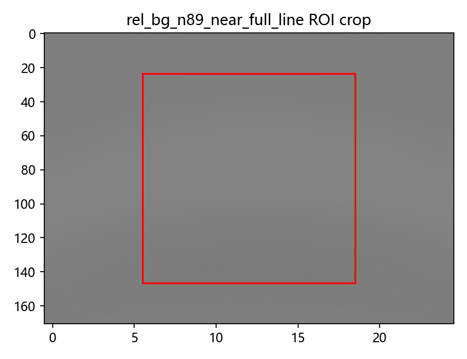

AT-011 Relative Background Window Candidate Policy
Source commit:
937560b61fbd70fecc3c0534af6a2a37861d6fccDataset: pipe_demo_longline_v1 [2037, 90]
Zero-time policy:
excludedDewow policy:
excluded_primaryGenerated candidate ratios:
[0.03333333333333333, 0.1, 0.18888888888888888, 0.3888888888888889, 0.7, 0.9888888888888889]Generated ntraces:
[3, 9, 17, 35, 63, 89]
Interpretation: AT-010 absolute ntraces values are single-scene values.
AT-011 reinterprets them as relative trace-count-aware behavior.
Best label:
near_full_line |
favors large/near/full: True





Known risks
- Single native gprMax scene cannot define universal policy defaults.
- Large-window preference may depend on this scene geometry/background.
- Multi-scene validation is required before preset finalization.